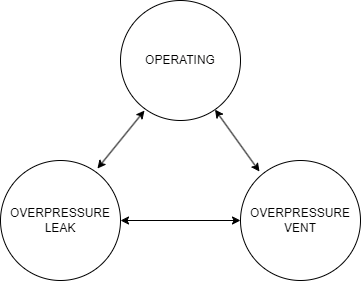
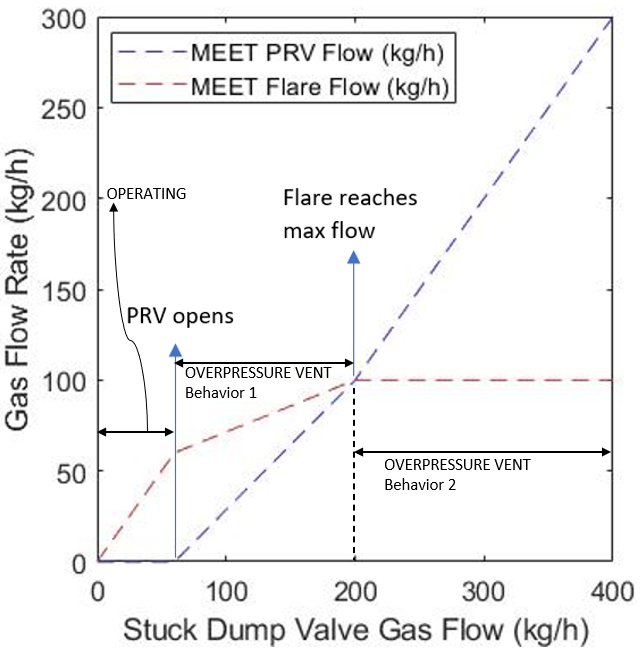

Tank Battery¶
Model Filename: TankBattery.json
Tank Battery is a group of tanks that are used for storing liquids for sale. Tank Batteries are filling most of the time denoted by ‘OPERATING’ state. Overpressure situation in tanks is modelled as ‘OVERPRESSURE_VENT’, where excess of gas is released through the prvs. ‘OVERPRESSURE_LEAK’ refers to accidental opening of the vents leading to leaks.
States¶
- OPERATING
Tank battery operating normally
- OVERPRESSURE_LEAK
Leaks on vents
- OVERPRESSURE_VENT
Emissions due to overpressure

Fluid Flows¶
- Vapor
Tank condensate/water flash to flares
Secondary ID: tank_flash
- Vapor
Vapor from upstream (usually from sep) goes to upstream equipment (usually flares)
Secondary ID: tank_gas_outlet
- Vapor
Condensate/water flash goes to prvs, overpressure large emitter. Only used for testing/analysis
Secondary ID: tank_flash_emitted_gas
- Vapor
Vapor from upstream (usually from sep) goes to prv after the threshold, overpressure. Only used for testing/analysis
Secondary ID: emitted_gas
Site Definition Columns¶
- Battery Type
Condensate Tank or Water Tank
- Facility ID
Facility of the equipment
- Unit ID
Identity of the equipment
- Component Count
Component counts of all the equipment that can leak
- Fluid
Condensate or Water
- Overpressure Vents Large Emitter pLeak
Probability of tanks going into overpressure mode to release the excess pressure through flares or prvs
- Overpressure Vents Large Emitter MTTR min
Minimum duration to repair for large emitters caused due to overpressure situation
Units: days
- Overpressure Vents Large Emitter MTTR max
Maximum duration to repair for large emitters caused due to overpressure situation
Units: days
- Overpressure Vents Large Emitter Threshold
Threshold inlet flow above which the prv starts to open
Units: scfh
- Inlet Flow At Max Primary Flow
When inlet flow reaches this value, the primary equipment (ex. flares) receives its maximum flow
Units: scfh
- Max Primary Outlet Flow
Maximum flow into the primary equipment from the tanks. The remaining gas goes through the vents/prvs
Units: scfh
Emitters¶
- Tank Vents Large Emitter
Emitter Category: OVERPRESSURE EMITTER
Emission Category: FUGITIVE
Model Parameters:
- Tank Thief Hatch Leak
Emitter Category: COMPONENT LEAK
Emission Category: FUGITIVE
Model Parameters:
- Number of Thief Hatches
Specifies the number of thief hatches, which also implies the number of tanks in a battery. This value is used as activity factor for emissions
- Tank Thief Hatch pLeak
Probability of leak thief thief hatches
- Tank Thief Hatch MTTR min
Minimum days of Mean Time To Repair a thief hatch leak
Units: days
- Tank Thief Hatch MTTR max
Maximum days of Mean Time To Repair a thief hatch leak
Units: days
- Factor Tag
A parameter to identify a set of activity and emission factors in Factors.csv file
- Leak GC Name
Gas composition pointer for leaks based on pLeak, MTTR, MTBF
- Tank Battery Component Leak
Emitter Category: COMPONENT LEAK
Emission Category: FUGITIVE
Model Parameters:
- Component Leak Survey Frequency
Frequency of leak surveys (ex. LDAR)
Units: days
- Component Count
Component counts of all the equipment that can leak
- Component pLeak
Probability of leak of the number of components leaking at any time
- Leak GC Name
Gas composition pointer for leaks based on pLeak, MTTR, MTBF
- Factor Tag
A parameter to identify a set of activity and emission factors in Factors.csv file
- Tank Battery Vent Leak
Emitter Category: COMPONENT LEAK
Emission Category: FUGITIVE
Model Parameters:
- Number of Vents
Number of vents on a battery. Also used as activity factor
- Tank Battery Vent pLeak
Probability of leak of a tank vent
- Tank Battery Vent MTTR min
Minimum days of MTTR of a tank vent leak
Units: days
- Tank Battery Vent MTTR max
Maximum days of MTTR of a tank vent leak
Units: days
- Factor Tag
A parameter to identify a set of activity and emission factors in Factors.csv file
- Leak GC Name
Gas composition pointer for leaks based on pLeak, MTTR, MTBF
- Tank Pneumatic Emissions
Emitter Category: PNEUMATIC EMISSION
Emission Category: VENTED
Model Parameters:
- Leak GC Name
Gas composition pointer for leaks based on pLeak, MTTR, MTBF
- Factor Tag
A parameter to identify a set of activity and emission factors in Factors.csv file
- Actuator Type
Actuator type of pneumatics on the facility
Units: Gas, Air, Electric
- Fluid flow based emitter
Emitter Category: TANK VENT
Emission Category: FUGITIVE
Model Parameters:
’OVERPRESSURE VENT’ in the state machine include thief hatches, vents/prv that pop open when the pressure goes above a certain threshold. The over-pressure situation is calculated using a fluid flow threshold for gas inlet flows. The pressure is measured as a function of change of vapor fluid flows. These emissions are the mechanistically modeled large emitters. ’OVERPRESSURE LEAK’ in the state machine implies accidental opening of the vents that are responsible for undesired emissions. We first initialize the start machine to OPERATING to record the proportional flow from separators or a fixed source. The criteria for state change is as follows:
The parameter rateTransform refers to the transformation of fluid flows from inlet flow to outlet flow. The outlet flows from the above rateTransform calculations go to the primary downstream equipment (flares), which can be combusted later. Vents have another parameter called prvSwitch that turns on the prv flow when the prvs start to open after the gas flows reach the threshold. The amount of gas going to the prv is given by \(rateTransform - x\), which is the source of large emissions.
Tanks are in the OPERATING state until the prv threshold is reached, implying prv opens and we get emissions out of the prv. Since \(prvFlow=flareFlow-x\), the total volume of gas is conserved.
From the equations, we can see two ’OVERPRESSURE VENT’ behaviors which are illustrated in the diagram below. One example of over-pressure in tanks is due to stuck dump valve in upstream separator/s.
Note that we’re adding gas flows with different gas compositions as a weighted sum of the gas densities without considering the gas compositions themselves. This is an approximate and actual mixing routine is yet to be implemented.
The remaining state from the above equations is the OVERPRESSURE LEAK. This state occurs randomly depending on the pLeak. It must be noted that OVERPRESSURE VENT triggers when there is an overpressure situation and OVERPRESSURE LEAK triggers randomly depending on pLeak.
{kind=link}

Overpressure behavior approximation¶